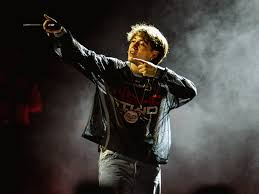

Morat es una exitosa banda colombiana de pop-folk y pop-rock formada en Bogotá en 2011. Integrada por Juan Pablo Isaza, Juan Pablo Villamil, Simón Vargas y Martín Vargas, destacan por sus letras románticas, armonías vocales y el uso prominente del banjo.
Babi, nombre artístico de Bárbara Guillén Cantarero, es una cantante y compositora española nacida en Madrid en 1999. Se dio a conocer por sus letras crudas y melancólicas, moviéndose entre géneros como el rap, trap, lo-fi y pop.
Paulo Londra (Córdoba, 1998) es un destacado cantante, rapero y compositor argentino de trap y reguetón, reconocido por sus inicios en batallas de freestyle como El Quinto Escalón.

Humberto Rodríguez Terrazas, conocido como Humbe (Monterrey, 2000), es un cantautor y productor mexicano de pop alternativo, destacado por su rápido ascenso viral.